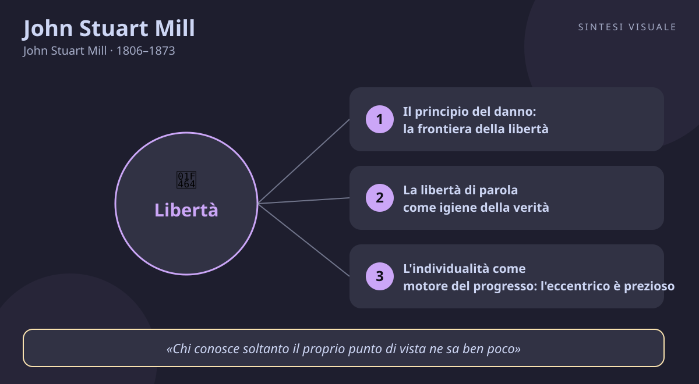

Home / Filosofi / John Stuart Mill

John Stuart Mill
John Stuart Mill · 1806–1873
«L'unico scopo legittimo del potere è evitare danno agli altri»
- Danno agli altri
- Libertà di parola
- Utilitarismo
- Emancipazione
💬La massima
«L'unico scopo per il quale si può legittimamente esercitare un potere su qualsiasi membro di una comunità civilizzata, contro la sua volontà, è quello di evitare danno agli altri.»
— John Stuart Mill, Saggio sulla libertà (On Liberty), capitolo I, 1859 (in inglese: «the sole end for which mankind are warranted, individually or collectively, in interfering with the liberty of action of any of their number, is self-protection»)
Questa frase è il celebre «principio del danno», il cuore di tutto il pensiero liberale moderno. Mill non dice che ognuno può fare tutto ciò che vuole in assoluto: dice qualcosa di più preciso e più forte. finché le tue azioni riguardano solo te — come vivi, in cosa credi, come ti vesti, chi ami, a cosa ti dedichi — né lo Stato né la maggioranza né il vicinato hanno alcun diritto di metterci becco, nemmeno «per il tuo bene». L'unica eccezione è quando le tue azioni danneggiano gli altri: lì, e solo lì, l'interferenza diventa legittima.
Pensate a un condominio: sei libero di arredare il tuo appartamento come vuoi, ascoltare la musica che preferisci in cuffia, restare alzato fino alle tre di notte. Ma se metti la musica a tutto volume alle tre di notte, il tuo vicino non dorme: quello è danno agli altri, e allora il regolamento può intervenire. Mill prende questa intuizione domestica e ne fa una costituzione morale per l'intera società: tra «mi dà fastidio» e «mi danneggia» c'è un abisso, e solo il danno giustifica la coercizione.
La parte più rivoluzionaria è il rifiuto del paternalismo: impedire a un adulto capace di intendere di farsi del male da solo — vietargli un libro, una fede, uno stile di vita — è per Mill una tirannia, anche se votata a maggioranza. Su sé stesso, sul proprio corpo e sulla propria mente, l'individuo è sovrano.
👤Biografia
John Stuart Mill nasce a Londra il 20 maggio 1806, figlio primogenito del filosofo ed economista James Mill, discepolo di Jeremy Bentham. Il padre gli impone l'esperimento educativo più famoso della storia: a tre anni legge il greco, a otto gli autori latini, a dodici la logica e l'economia politica, con giornate di studio massacranti e quasi nessun gioco né amico. A vent'anni il ragazzo prodigio crolla: una profonda crisi depressiva, descritta con commovente onestà nella sua Autobiografia. Si chiede se, realizzato ogni progetto di riforma, sarebbe stato felice — e la risposta è no. A salvarlo sono la poesia di Wordsworth e di Coleridge, che gli insegnano il valore dei sentimenti, e poi l'incontro con Harriet Taylor, donna sposata, intelligente e anticonformista, che diventa la compagna e la musa della sua vita: la sposa nel 1851, dopo vent'anni di amicizia, e la sua morte nel 1858 lo devasta.
Intanto Mill lavora per trentacinque anni alla Compagnia delle Indie Orientali, diventando di fatto amministratore di un impero, e scrive senza sosta. Nel 1865 viene eletto al Parlamento, dove propone per primo il voto alle donne e difende i diritti degli irlandesi e dei lavoratori. Muore ad Avignone, in Francia, il 7 maggio 1873, e sulla sua tomba c'è scritto che fu «l'uomo che fece di più per far pensare al mondo».
📌Sintesi del pensiero
Per Mill la vita buona è la vita libera e in crescita: ogni individuo deve poter sperimentare, sbagliare e scegliere da sé, perché solo così sviluppa le proprie facoltà e la società progredisce. L'utilità — la felicità generale — resta la bussola morale, ma la felicità vera nasce dalla libertà di parola, dalla diversità degli stili di vita e dalla piena uguaglianza tra uomini e donne: proteggere l'eccentrico e la minoranza dalla tirannia della maggioranza è il compito più alto di una società civile.
🏛️I temi fondamentali
- Il principio del danno: la frontiera della libertà. Nessuno può costringerti a vivere «come si deve»: bere, credere, amare, vestirsi in un modo o nell'altro sono affari tuoi. L'interferenza è legittima solo per impedire danni ad altri — rubare, truffare, aggredire. Esempio concreto: vietare a un adulto di leggere un libro perché «gli fa male» è tirannia; vietargli di guidare ubriaco è legittimo, perché mette a rischio gli altri sulla strada. La linea corre tra sé e gli altri.
- La libertà di parola come igiene della verità. Zittire un'opinione è sempre un furto all'umanità: se l'opinione è vera, ci priviamo della verità; se è falsa, perdiamo l'occasione di rafforzare la verità confrontandola con l'errore. Esempio concreto: in una riunione di lavoro, il collega che osa dire «questo piano non funzionerà» e viene zittito dal capo fa un danno a tutti — Mill direbbe che l'azienda ha appena sprecato la sua occasione di scoprire i propri errori prima che costino soldi.
- L'individualità come motore del progresso: l'eccentrico è prezioso. Gli originali, gli stravaganti, i non conformisti non sono un fastidio ma il sale della società: ogni buona usanza è stata un tempo un'eccentricità. Esempio concreto: il dipendente che lavora in modo diverso da tutti — orari strani, metodi insoliti — ma porta risultati, non va normalizzato ma studiato: è dai suoi esperimenti che nascono le pratiche migliori di domani.
- L'utilitarismo dei piaceri alti: meglio Socrate insoddisfatto. La felicità non è solo quantità di piacere ma qualità: i piaceri della mente, dell'arte, dell'amicizia valgono più di quelli bassi e immediati. Esempio concreto: scegliere la sera un corso di teatro invece dell'ennesima maratona di serie TV mediocri può dare meno relax immediato, ma nutre di più: tra un divertimento che anestetizza e uno che fa crescere, Mill vota per il secondo.
- L'emancipazione delle donne: la metà del cielo. In un'epoca in cui la moglie era proprietà legale del marito, Mill denuncia la subordinazione femminile come l'ultimo residuo della schiavitù e chiede voto, divorzio, accesso alle professioni. Esempio concreto: quando in un colloquio una candidata brillante viene scartata perché «tanto poi farà figli», si ripete esattamente il pregiudizio che Mill combatteva nel 1869: giudicare la persona dal sesso invece che dalle capacità.
📚Le opere principali
- Saggio sulla libertà (On Liberty, 1859). Il manifesto della libertà individuale: principio del danno, libertà di parola, difesa dell'eccentricità. Tesi centrale: l'individuo è sovrano su sé stesso e la società può interferire solo per evitare danno agli altri. Conta perché è il testo fondativo di ogni costituzione liberale e di ogni difesa della libertà d'espressione ancora oggi.
- L'utilitarismo (Utilitarianism, 1863). La riformulazione più influente dell'etica di Bentham: l'azione giusta massimizza la felicità, ma i piaceri si distinguono per qualità, non solo per quantità. Tesi centrale: meglio Socrate insoddisfatto che un maiale soddisfatto. Conta perché è ancora il manuale di riferimento per chi ragiona di etica pubblica, economia del benessere e politiche sociali.
- La soggezione delle donne (The Subjection of Women, 1869). La prima grande denuncia filosofica della disuguaglianza di genere scritta da un uomo. Tesi centrale: la subordinazione femminile non è natura ma privilegio legale, e danneggia l'intera società privandola di metà dei suoi talenti. Conta perché anticipa di decenni il femminismo organizzato e resta un modello di argomentazione per ogni battaglia di pari opportunità.
- Autobiografia (Autobiography, 1873, postuma). Il racconto dell'educazione straordinaria, della crisi dei vent'anni e dell'incontro con Harriet Taylor. Tesi centrale: la formazione deve coltivare sentimenti e immaginazione, non solo logica. Conta perché è uno dei ritratti più onesti mai scritti di come si forma — e si deforma — una mente, e una lezione per genitori ed educatori.
💬Massime celebri
«Meglio un uomo insoddisfatto che un maiale soddisfatto; meglio Socrate insoddisfatto che uno stolto soddisfatto» — L'utilitarismo, capitolo II (1863; in inglese: «It is better to be a human being dissatisfied than a pig satisfied; better to be Socrates dissatisfied than a fool satisfied»). Conta perché in una riga rovescia l'idea che felicità significhi comfort: la dignità del pensare vale più del benessere dell'abbuffarsi.
«L'unica libertà che merita questo nome è quella di perseguire a modo nostro il nostro bene, sempre che non cerchiamo di privare gli altri del loro» — Saggio sulla libertà, capitolo III (1859; in inglese: «The only freedom which deserves the name, is that of pursuing our own good in our own way, so long as we do not attempt to deprive others of theirs»). Conta perché è la formula compatta del principio del danno: fai come vuoi, fino al confine dove inizia il diritto altrui.
«Chi conosce soltanto il proprio punto di vista ne sa ben poco» — Saggio sulla libertà, capitolo II (1859; in inglese: «He who knows only his own side of the case, knows little of that»). Conta perché è la regola d'oro del dibattito sano: se non sai confutare le obiezioni, non capisci davvero nemmeno la tua posizione.
⌛Contesto storico
Mill vive nel cuore dell'età vittoriana: nasce un anno dopo Trafalgar e muore mentre l'Inghilterra è l'officina del mondo. Intorno a lui la rivoluzione industriale trasforma tutto — le fabbriche di Manchester, la ferrovia che dal 1830 cuce il paese, il telegrafo, l'Esposizione universale di Londra del 1851 con il suo Palazzo di Cristallo. È l'epoca d'oro del libero scambio e dell'impero britannico, ma anche delle workhouse dei poveri, del lavoro minorile nelle miniere, delle epidemie di colera nei quartieri operai e delle grandi riforme elettorali: il Reform Act del 1832, le lotte dei cartisti, l'abolizione del prezzo del grano nel 1846.
Il 1848 è l'anno che scuote l'Europa: rivoluzioni a Parigi, Vienna, Berlino, Milano e Venezia, il Manifesto di Marx ed Engels, mentre Londra resta calma — e Mill, che lavora alle Colonie, osserva e trae lezione: le masse entrano in politica, e la democrazia di massa può diventare tirannia della maggioranza se non si proteggono le minoranze. Negli stessi anni Darwin pubblica L'origine delle specie (1859), la questione irlandese avvelena la politica inglese e negli Stati Uniti infuria la guerra civile contro la schiavitù (1861-1865), che Mill segue con passione abolizionista.
I movimenti che lo formano sono l'utilitarismo di Bentham e del padre James Mill, l'economia politica di Ricardo, il romanticismo di Coleridge e Wordsworth che lo guarisce dalla crisi, e il pensiero francese di Tocqueville e di Comte. I movimenti che trasmette sono il liberalismo sociale moderno, il femminismo politico, la difesa della libertà d'espressione e il welfare state: da lui discendono tanto le costituzioni liberali quanto le politiche per l'istruzione pubblica e i diritti delle donne.
🌊L'eredità
Dopo Mill, nessuno ha più potuto parlare di libertà senza fare i conti con il suo principio del danno: entra nelle corti, nelle costituzioni e nelle dichiarazioni dei diritti come il criterio per decidere quando lo Stato può vietare e quando deve tollerare. Il suo Saggio sulla libertà diventa la bibbia dei movimenti per la libertà di stampa e di parola nel Novecento, da difendere ogni volta che un governo o una folla vogliono zittire il dissenso. L'utilitarismo da lui raffinato nutre l'economia del benessere, le politiche pubbliche e perfino i calcoli di costi e benefici dei governi moderni. La sua battaglia per le donne apre la strada alle suffragette — che conquistano il voto nel Regno Unito nel 1918 e nel 1928 — e a tutto il femminismo liberale. Persino i suoi critici, da destra e da sinistra, ragionano sul terreno che lui ha tracciato: quando oggi discutiamo di legalizzazione, censura sui social, eutanasia o velo islamico, stiamo quasi sempre applicando, senza saperlo, il metro di Mill — c'è un danno agli altri, o solo un fastidio?
🌍Esempi di oggi
- Il gruppo WhatsApp dei condomini. Un vicino propone di vietare a tutti di stendere i panni sul balcone «perché fa brutto». Mill risponderebbe: il brutto non è un danno — finché non c'è sporco o pericolo per gli altri, imporre il proprio gusto estetico è la tirannia della maggioranza in miniatura. La massima in azione: tollerare ciò che ci infastidisce è il prezzo della libertà di tutti.
- Il collega che la pensa diversamente. In riunione una giovane propone un'idea impopolare e viene messa a tacere con «qui si è sempre fatto così». Mill direbbe che l'azienda ha appena perso due cose: forse la verità — l'idea poteva essere buona — e di sicuro l'occasione di verificare le proprie certezze. Proteggere la voce dissenziente non è gentilezza, è interesse: le migliori decisioni nascono dal confronto, non dal coro.
- La scelta di vita che scandalizza la famiglia. Un trentenne lascia un posto fisso ben pagato per aprire una piccola ciclofficina, e i parenti parlano di rovina e irresponsabilità. Mill risponderebbe che su sé stesso l'individuo è sovrano: se non danneggia nessuno e accetta le conseguenze, nessuno — nemmeno chi lo ama — può imporgli la «vita giusta». Il bene imposto con la forza smette di essere bene.
📄
# John Stuart Mill — «L'unico scopo legittimo del potere è evitare danno agli altri»
Buongiorno! Oggi incontriamo il filosofo che ha inventato la regola d'oro della libertà moderna: economista, parlamentare, femminista ante litteram e figlio di un'educazione tanto straordinaria quanto spietata. Il ritratto qui sopra — l'incisione ottocentesca dal celebre ritratto fotografico del 1865, quando Mill aveva circa sessant'anni — lo mostra con la lunga barba bianca, la fronte alta e lo sguardo mite e fermo del pensatore che ha fatto della libertà individuale la causa di una vita.
🧠Quiz
1 Secondo il principio del danno di Mill, quando è legittimo interferire con la libertà di un individuo?
2 Perché, secondo Mill, zittire un'opinione è sempre un danno per l'umanità?
3 Cosa intende Mill con la superiorità dei «piaceri alti»?
4 Quale posizione sostenne Mill riguardo alle donne, rivoluzionaria per il suo tempo?
5 Cosa salvò il giovane Mill dalla sua crisi depressiva dei vent'anni?
Rispondi in chat con es. «Quiz Mill: 1B 2A 3C 4D 5A» (usa - per le risposte che salti).
✅Soluzioni — tocca per vedere
1B – 2B – 3B – 4C – 5B
🔁Ripasso
- Principio del danno: l'interferenza è legittima solo per prevenire danni ad altri, mai per imporre il bene o la morale della maggioranza all'individuo.
- Libertà di parola: censurare un'opinione ruba all'umanità o una verità o l'occasione di verificare la verità esistente attraverso il confronto.
- Piaceri alti e bassi: la felicità utilitarista si misura anche in qualità — i piaceri intellettuali e morali contano di più di quelli meramente sensuali.
🖼️In un colpo d’occhio

Tocca l’immagine per ingrandirla.